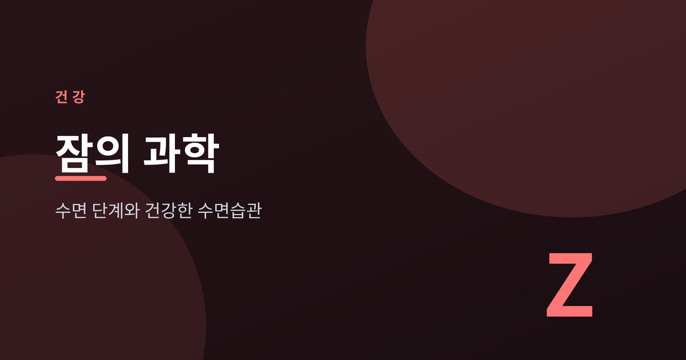
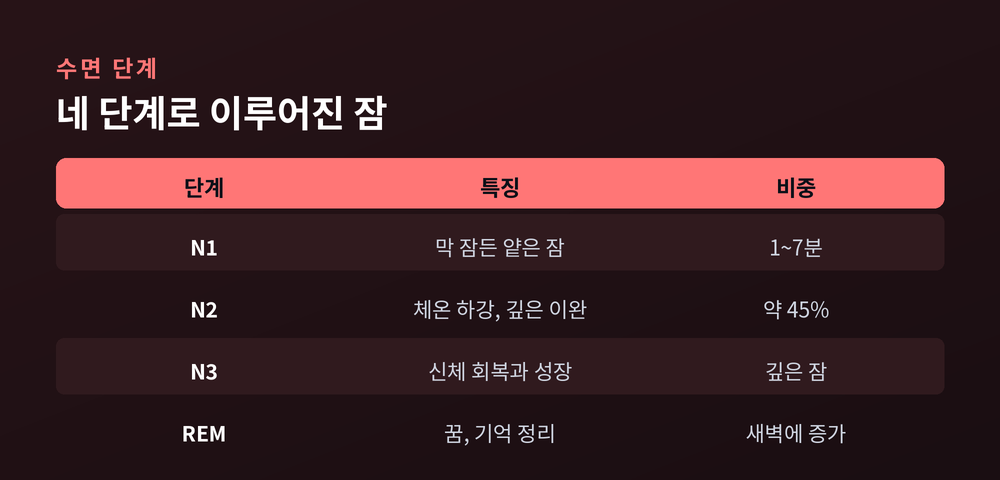
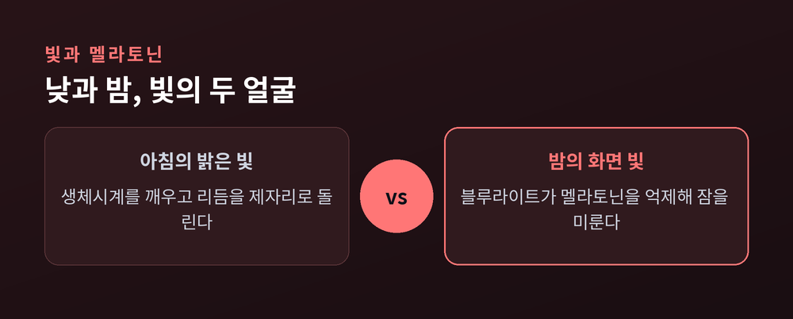
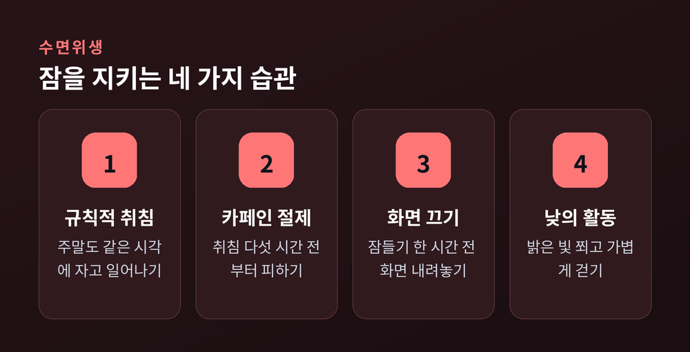

오늘 밤을 바꾸는 수면 단계와 수면위생

이번 글에서는 잠이 어떤 단계를 거쳐 진행되는지, 그리고 더 나은 잠을 위한 습관을 정리해 보겠습니다. 매일 반복하는 일이지만 그 안에서 무슨 일이 벌어지는지는 의외로 덜 알려져 있습니다. 잠의 구조를 알고 나면 밤을 조금 다르게 대하게 됩니다. 오늘은 그 과정을 하나씩 살펴보려 합니다.
수면은 크게 비렘수면 세 단계와 렘수면으로 나뉩니다.
N1은 막 잠든 얕은 단계입니다. 보통 1분에서 7분 사이로 짧습니다.
N2는 몸이 더 깊이 이완되는 구간입니다. 체온이 내려가고 호흡이 느려지며, 전체 수면의 약 45%를 차지합니다.
N3은 가장 깊은 잠입니다. 몸의 회복과 성장이 이때 이루어집니다.
렘수면은 대부분의 꿈이 일어나는 단계로, 기억을 정리하는 데 관여합니다.
이 네 단계가 한 묶음이 되어 약 90분짜리 주기를 이룹니다. 하룻밤에 이 주기를 네다섯 번 반복하는 셈입니다. 잠든 뒤 대략 90분이 지나야 첫 렘수면에 들어갑니다. 그래서 잠이 얕게 느껴지는 새벽은 게으름이 아니라, 렘수면이 몰려 있는 자연스러운 구간인 경우가 많습니다.
깊은 잠은 초저녁에, 꿈이 많은 렘수면은 새벽으로 갈수록 늘어납니다. 그러니 잠자리에 드는 시각이 뒤로 밀리면, 몸이 가장 회복되는 깊은 잠부터 깎여 나가기 쉽습니다. 자는 시간의 길이만큼이나 언제 눕느냐도 중요한 이유입니다.

우리 몸에는 24시간을 주기로 도는 생체시계가 있습니다. 이것을 서카디안 리듬이라 부릅니다.
이 리듬을 조율하는 가장 강한 신호는 빛입니다. 눈이 빛을 감지하면 뇌의 시교차상핵에 그 정보가 전해집니다. 이곳이 일종의 중앙 시계 노릇을 하며 몸 곳곳에 낮과 밤을 알립니다. 해가 지면 멜라토닌이라는 호르몬이 분비되기 시작해 졸음을 부르고, 일몰 후 약 일곱 시간 무렵 정점에 이릅니다.
문제는 밤의 빛입니다. 특히 화면에서 나오는 블루라이트는 멜라토닌 분비를 억제합니다. 예전엔 잠자리에서 책장을 넘겼다면, 지금은 많은 분이 화면을 들여다봅니다. 그 작은 빛이 몸속 시계를 뒤로 미룹니다.
반대로 아침의 밝은 빛은 흐트러진 리듬을 제자리로 돌려놓는 데 도움이 됩니다. 잠에서 깬 뒤 커튼을 열고 잠깐 바깥 빛을 쬐는 일이, 실은 그날 밤의 잠을 준비하는 첫걸음인 셈입니다.

성인은 하루 7시간 이상 자기를 권합니다. 그런데 미국 성인의 30.5%는 그에 못 미친다고 합니다. 적지 않은 사람이 만성적인 수면 부족 속에 살아가는 셈입니다.
잠이 부족하면 그 여파는 하루의 피곤함에서 끝나지 않습니다. 정상적으로 잘 때는 혈압이 내려가며 심장이 쉬는데, 잠이 모자라면 그 회복이 방해받습니다. 실제로 짧은 수면은 심장병과 뇌졸중 위험을 높이는 것으로 보고됩니다. 여기에 당뇨 위험 증가, 면역력 저하, 기억력 손상까지 겹칩니다. 잠은 미뤄둔 만큼 조용히 청구서가 쌓이는 일입니다.
거창한 처방이 필요한 것은 아닙니다. 매일 같은 시각에 자고 일어나기, 취침 다섯 시간 전부터 카페인 피하기, 잠들기 한 시간 전 화면 끄기. 이 몇 가지만으로도 잠의 질은 달라집니다. 낮에 밝은 빛을 쬐고 가볍게 걷는 것도 밤잠을 돕습니다. 10분 남짓 걷는 것으로도 도움이 된다고 하니, 부담을 크게 가질 일은 아닙니다.
주말에 몰아서 자는 것으로 부족한 잠을 완전히 되돌리기는 어렵습니다. 그보다는 자고 일어나는 시각을 주중과 크게 벌리지 않는 편이 리듬을 지키는 데 낫습니다. 잠들기 전 한 시간을 조명을 낮추고 조용히 보내는 것도 몸에 곧 밤이 온다는 신호가 됩니다.
다만 습관이 하루아침에 몸에 배지는 않습니다. 며칠 시도하고 효과가 없다며 접기 쉽습니다. 저는 한 가지씩 천천히 붙여가시길 권합니다.

끝으로 한 마디만 더 드리겠습니다. 잠은 하루의 끝이 아니라, 다음 하루를 준비하는 시간입니다. 완벽한 수면을 하루 만에 만들기는 어렵습니다. 다만 작은 습관 하나가 쌓이면 몸은 정직하게 답합니다.
"잘 자는 것도 하나의 기술입니다."
오늘 밤, 화면을 조금 일찍 내려놓아 보시면 어떨까요.